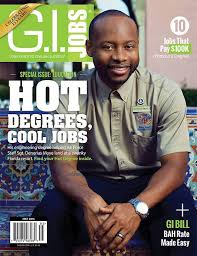
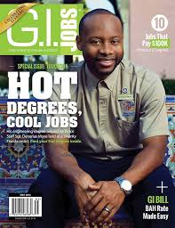

My name is Denerius J. Moye, but I prefer to be called DJ. I was born on April 28th 1989 in a small city called Vidalia, GA. I enjoy playing several sports, going to gun ranges, and spending time with friends and family. After graduating from Vidalia High School, I decided to enlist in the United States Air Force. After graduating USAF Basic Military Training, I was shipped off to Keesler AFB, MS to attend my first tech school. After that I moved on to Vandenberg AFB, CA for more technical training. My first duty station was Minot AFB,ND where I performed my duties as an Intercontinental Ballistic Missile Facilities Maintenance Technician, or X3. My job was to maintain the Minuteman III ICBM weapon system. Throughout my career I worked in different capacities including being a Facilities Maintenance Team Chief, which was my favorite because I was directly in charge of maintaining 150 Nuclear Launch Facilities as well as 15 Missile Alert Facilities. My highest rank achieved was E-5 or Staff Sergeant. After spending eight years of active duty service, I decided to separate from the Air Force, and come to South Florida to explore civilian life. I was hired on the spot as a Property Operations Manager at the Boca Raton Resort and Club. During my time at the resort I managed to be selected to grace the cover of G.I. Jobs Magazine. Although the maintenance realm was fun and rewarding, I decided to pursue my true passion which lies in the IT field. I explored many different options but the Web Development program at Florida Vocational Institute was the best option for me. I look forward to learning everything there is to know about Web Development, and use the skills I learn to build a second career I can be proud of.